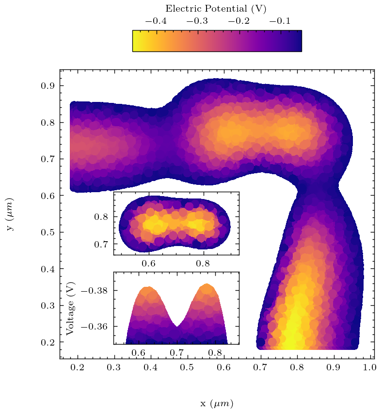

Technical and Experimental Skills
My work as a physicist has allowed me to delve into various experimental, theoretical, and computational techniques.
Some of these techniques and capabilities are outlined below.
Over the years, I have developed a strong foundation in coding, which has allowed me to work on a variety of projects.
These projects have ranged from data analysis to machine learning to physical simulations, and have required a variety of coding
languages.
Python
Python has been the primary language I have used throughout my studies and work. I have used Python for data analysis,
machine learning, hardware control, data visualisation, and many other applications. The majority of the figures seen in my work
have been generated using Python.
The main reason Python remains my go-to language, even though it might not be my favourite or the fastest,
is due to its versatility and the vast number of libraries available for it.
The largest projects I have worked on in Python are:
- As part of my Master's thesis project, I developed an initial design for 2⨯2 and 2⨯3 quantum dot arrays, which were
subsequently automated using Python, such that it could generate 2⨯N designs, for arbitrarily large N.
A simulation pipeline was created, in which each electrical gate in the design were designated as an individual entity,
and the meshing of the design was done using the gmsh library. This allowed for the finite element analysis (FEM) to be carried
out using a different language, by assigning electrical parameters to each gate entity.
- My PhD project, which involves analysing data from a variety of sources, including scanning electron microscopy,
atomic force microscopy, X-ray characterisation techniques, and Raman spectroscopy, including others.
- During my undergrad I developed an object-oriented simulation of a system of chemical-seeking lablets, suspended in a 2D fluid,
which were attracted to a chemical source. The lablets themselves would randomly exude chemicals as well, leading to a complex
interaction in the system. The simulation was intended as a pre-cursor to investigating the properties of self-administering
medicinal lablets.
While I have naturally developed many more scripts, programmes, and simulations in Python, these are a few of
the largest projects I have worked on.
Julia
Julia is a dynamically typed, high-level programming language perfect for technical and scientific computing,
with syntax that is familiar to users of Python. I have used Julia for a quite few projects, including my internship at DESY, my Bachelor's thesis, and my Master's thesis, and
I have found it to be a very powerful language, with a lot of potential. However, due to the youth of the language, there's
a lack of libraries and resources available, which has limited my use of it. I expect this to change as the language matures,
and I plan on incorporating it more into my work in the future.

C++/FreeFEM++
C++ is a language I have used for a limited number of projects, however, the main reason I have used it is due to its compatibility with the
open-source FreeFEM++ finite element solver. The finite element method is a numerical technique for finding approximate solutions to
boundary value problems for partial differential equations. The method was used in my Master's thesis project to simulate the electrical
fields in quantum dot arrays, and I have found it to be a very powerful tool for this purpose.
On the right you see the result of this simulation, in which the electrical potential has been calculated in region in which the
2-dimensional electron gas is expected to be, with two neighbouring electrical gates. The purpose of the simulation was to determine
whether the electron gas could be confined into a quantum dot, i.e., the region beneath the gates, and be electrically controlled by them.
While the visualisation of the simulation was done in Python, the simulation itself was done in FreeFEM++.
I hope to use C++ more in the future, as I believe it is a very powerful language, and having access to a lower-level language
will be beneficial for my future work.
HTML, CSS, and JavaScript
While I have limited experience with web development, I have developed this website using HTML, CSS, and JavaScript.
This has allowed me to gain a basic understanding of web development, and I have found it to be a useful skill to have.
I intend to continue developing my skills in this area, as I believe it will be beneficial for my future career and a generally
nice skill to have.
Matlab
Matlab was the first language I learned, and I have used it for a variety of projects, including data analysis, simulations, and
hardware control. While I have not used it as much in recent years, as I have become more aware of the benefits of Open-Source software,
my knowledge of the language remains.
Bash Scripting
As an avid Linux enthusiast, I have developed a strong foundation in Bash scripting, which has allowed me to automate many tasks
in my personal projects. While these scripts are not as complex as the Python scripts I have written, they have been invaluable
in automating tasks such as data analysis, file management, system maintenance, and general quality-of-life on a Linux machine.
Experimental Techniques
Scanning Electron Microscopy
Scanning Electron Microscopy (SEM) is a technique used to image surfaces at the nanometre scale. This imaging technique is based on
electrons instead of light, as electrons are not subject to the same diffraction limit as light. The technique is theoretically
non-destructive, but can affect certain materials due to the accumulation of electrons in the material or carbon-depositioning
onto the surface.
Atomic Force Microscopy
Atomic Force Microscopy (AFM) is a technique used to image surfaces at the atomic level. The technique is based on scanning a sharp
tip across the surface of a sample, and measuring the forces between the tip and the sample, as well as monitoring the reflection
of a laser bounding off the tip. The technique is non-destructive, and can be used to image surfaces in a variety of environments,
including vacuum, air, and high-humidity environments. I have used AFM to characterise the surfaces of 3D patterned substrates, the roughness of thin-films,
and the topography of transferred thin-film membranes.
Atomic Force Microscopy is an umbrella term for a variety of techniques, including, but not limited to:
- Piezoresponse Force Microscopy (PFM)
- A way of accurately measuring the piezoelectric response of a ferroelectric material, by applying an alternatign current
to a conductive tip, and measuring the response of the material.
This can be used to determine the domain structure of the material.
- Electrostatic Force Microscopy (EFM)
- Is a non-contact, dynamic measurement, in which the resonance frequency of the oscillating, conductive tip
is shifted by the electrostatic forces between the tip and the sample, due to an externally applied voltage to the substrate.
- Scanning Capacitance Microscopy (SCM)
- Is a technique used to measure the local capacitance of a sample, by applying an alternating current to the tip, and measuring
the change tip-sample capacitance, due to the alternating current. This can, for example, be used to determine the local doping concentration of a semiconductor, drop
to 10 nanometer scale.
- Magnetic Force Microscopy (MFM)
-
Is a technique used to measure the magnetic properties of a sample, by measuring the forces between a magnetised tip and the sample.
This can be used to determine the magnetic domain structure of a material, and is particularly useful for magnetic thin films.
Cryogenic Characterisation
During my Master's thesis project, I learned to perform cryogenic characterisation of quantum dots and Hall bars.
The Hall bars were used to measure the electrical properties of the 2-dimensional electron gas, and to ensure quality material
and the quantum dots were tested to determine the efficacy of the design. The measurements were performed in both a
dilution refrigerator and an adiabatic demagnetisation refrigerator,
which was cooled to a temperature of approximately 10 mK and 300 mK, respectively. The measurements were performed using
a variety of techniques, including lock-in amplification, standard DC measurements, and while RF measurements were attempted,
they ultimately did not yield any useful data.
I have undertaken a project during my PhD in which I am trying to develope an insert for the bottom-loading Oxford cryostatic
we have available in our lab, which will allow for full rotational control of the sample. This will allow us to utilise the
stronger z-component of our vector-magnet, which is not possible with the current insert, and will allow us to probe the
interesting 3D land-scape of the materials we are studying.
Atomic Layer Depositioning
Atomic Layer Depositioning (ALD) is a technique used to deposit thin films of materials with atomic precision. The technique is based on
exposing the substrate to alternating pulses of two or more reactive, gaseous precursors, which react to form a monolayer of material.
The monolayer is particularly uniform, and the process can be repeated to build up thicker films. I used ALD to deposit thin films
of aluminium, to act as an isolating dielectric in-between electrical gates. The process is based on the precursors trimethylaluminium, Al(CH
3)
3, and water.
Ellipsometry
Ellipsometry is a technique, which is used to determine the thickness and refractive index of thin films. It is based on the principle of
measuring the change in polarisation of light as it reflects off a surface. The technique is non-destructive, and can be used to measure
the thickness of films in the sub-nanometre range. I have used ellipsometry to characterise thin films of various materials, and have found
it to be a very useful tool for this purpose.
Electron Beam Lithography
I have extensive experience with electron-beam lithography (EBL) from my time at the Niels Bohr Institute, where it was used in an elaborate nine-step process to fabricate
quantum dots which were utilised as spin-qubits. The process involves using a focused beam of electrons to write patterns into a hardened polymer (what's known as a resist),
which is then developed, i.e., the resist is removed locally where it was exposed to the e-beam, and the pattern is transferred to the substrate using a variety of techniques,
the main two being etching and deposition.
The process allows you to gain precision in the 5-20 nanometre range, depending on your process optimisation, and is a crucial tool for the fabrication of nanostructures.
Energy Dispersive X-ray Spectroscopy